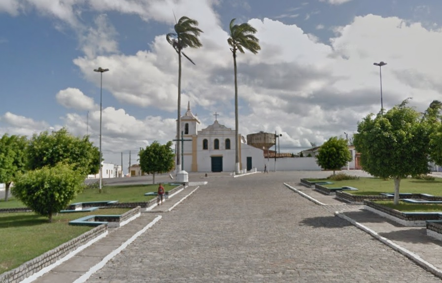

Tomar do Geru
História
A povoação de Geru foi núcleo de gentios, que ali se firmara, possivelmente bem antes do período das invasões holandesas em Sergipe. Com a Carta Régia de 22 de novembro de 1758, o Rei declarava livre todos os índios do território Sergipano, ao tempo em que criava Vila o antigo povoado de Geru, que passava a chamar-se Nova Távora ou Tomar, com a característica singular de ter nos cargos de seu serviço público exatamente elementos indígenas
O local onde hoje se encontra o município de Aracaju era a residência oficial do temível e cruel cacique Serigy, que segundo Clodomir Silva no "Álbum de Sergipe", de 1922, dominava desde as margens do rio Sergipe até as margens do rio Vaza-Barris. Em 1590, Cristóvão de Barros atacou as tribos do cacique Serigy e de seu irmão Siriri, matando-os e derrotando-os. Assim, no dia 1 de janeiro de 1590, Cristóvão Barros fundou a cidade de São Cristóvão (mais tarde capital da província) junto à foz do Rio Sergipe e define a Capitania de Sergipe.
Assim, ensaiava El Rei uma medida de alto alcance sociológico, habilitando o primitivo habitante de nossas selvas para as funções da administração, levando-o a assimilar e confundir-se com a população branca, numa tentativa de extinguir antagonismo. Em 1808 a Vila de Tomar tinha em seu território uma população de 633 índios e alguns brancos, servindo em sua Câmara um Juiz Ordinário “índios” e um “branco”.
Pela Lei de 19 de fevereiro foi extinta a Vila Tomar e anexada à Vila de Itabaianinha. Pela Lei Estadual nº 525-A, de 25 de novembro de 1953 foi criado o novo município com o nome de Tomar do Geru passando à categoria de cidade, sendo o seu território desmembrado do Município de Itabaianinha.
fonte: https://www.tomardogeru.se.gov.br/Pontos Turísticos
Igreja de nossa Senhora do Perpétuo Socorro
O altar reluz ouro em meio às imagens de Santo Inácio O símbolo da Companhia de Jesus no Brasil está presente no teto principal da igreja, marca das construções jesuíticas. Flores, anjos e adornos remetem as devoções marianas. É em Tomar do Geru (SE) que foi erguida a principal igreja jesuítica de Sergipe, datado do século XVII: a igreja de Nossa Senhora do Perpétuo Socorro
Dados Gerais de acordo com o IBGE
| Prefeito (a) | Pedro Silva Costa Filho |
| Vice-Prefeito (a) | Gerson Diniz |
| Site do município | https://www.tomardogeru.se.gov.br/ |
| Área territorial | 304,837 km² |
| População estimada | 13.534 pessoas |
| Densidade demográfica | 42,16 hab/km² |
| IDHM | 0,551 |
| PIB per capita | R$ 9.219,30 |